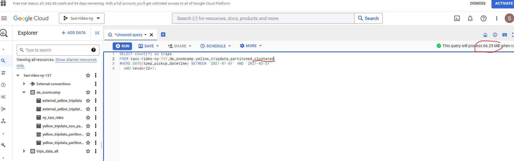

CREATE OR REPLACE EXTERNAL TABLE `taxi-rides-ny-137.de_zoomcamp.external_yellow_tripdata`
OPTIONS (
format = 'PARQUET',
uris = ['gs://dtc_data_lake_taxi-rides-ny-137/data/yellow/yellow_tripdata_2021-01.parquet', 'gs://dtc_data_lake_taxi-rides-ny-137/data/yellow/yellow_tripdata_2021-02.parquet', 'gs://dtc_data_lake_taxi-rides-ny-137/data/yellow/yellow_tripdata_2021-03.parquet']
);Week 3 - Data Warehouse and BigQuery
A Data Warehouse is an OLAP solution used for reporting and data analysis and generally includes raw, meta and summary data.
BigQuery (BQ) is a widely used serverless Data Warehouse which has a lot of built in features such as:
- machine learning
- geospatial analysis
- business intelligence
One of its key strengths is that Big Query maximises flexibility by separating the compute engine that analyses data from the storage.
3.1.1 Data Warehouse and BigQuery
In OnLine Transaction Processing (OLTP) information systems typically facilitate and manage transaction-oriented applications. This is contrasted with OnLine Analytical Processing (OLAP) which is an approach to answer multi-dimensional analytical (MDA) queries swiftly in computing.

Let’s now take a closer look at BQ in particular our New York taxi project dataset. BQ generally caches data, but for our purposes let’s disable this to ensure consistent results:
BQ also provides a lot of open source public datasets e.g. citibike_stations and we can run a query and save the results or explore further using Sheets, Looker Studio or Colab Notebook :
In terms of pricing there are two tiers - on demand pricing and flat rate pricing - depending on your specific requirements.
As explained in the BQ docs external tables are similar to standard BigQuery tables, in that these tables store their metadata and schema in BigQuery storage. However, their data resides in an external source. External tables are contained inside a dataset, and you manage them in the same way that you manage a standard BigQuery table.
Let’s use the data we already have stored in our data bucket and create an external table. In my particular case, project name is taxi-rides-ny-137, dataset name is de_zoomcamp and we are going to create a table named external_yellow_tripdata.
The files I have in GCS are parquet format and we copy the path ids and include as uris :
We run the query and our table is created. BQ is able to pick up the schema (column name and data type) directly from the parquet file :
Let’s now run a quick query on this table :
Partitioning in Big Query
A partitioned table is divided into segments, called partitions, that make it easier to manage and query your data. By dividing a large table into smaller partitions, you can improve query performance and control costs by reducing the number of bytes read by a query. You partition tables by specifying a partition column which is used to segment the table.
Further information is provided in the BQ docs.
Let’s first create a non-partioned table to demonstrate the benefits of a partitioned table :
## Create a non partitioned table from external table
CREATE OR REPLACE TABLE taxi-rides-ny-137.de_zoomcamp.yellow_tripdata_non_partitoned AS
SELECT *
FROM taxi-rides-ny-137.de_zoomcamp.external_yellow_tripdata;As we can see the pick up times are not in chronological order. Now let’s create a partitioned table which partitions by the column `tpep_pickup_datetime’:
# Create a partitioned table from external table
CREATE OR REPLACE TABLE taxi-rides-ny-137.de_zoomcamp.yellow_tripdata_partitoned
PARTITION BY
DATE(tpep_pickup_datetime) AS
SELECT * FROM taxi-rides-ny-137.de_zoomcamp.external_yellow_tripdata;As we can see our trip pickup times are now sorted in chronological order. Let’s take a closer look at how the partitioning is workng in practice.
# Let's look into the partitions
SELECT table_name, partition_id, total_rows
FROM `de_zoomcamp.INFORMATION_SCHEMA.PARTITIONS`
WHERE table_name = 'yellow_tripdata_partitoned'
ORDER BY total_rows DESC;We can see the partitioning (splits) by date. Let’s move on to another interesting feature concept in BQ known as Clustering.
Clustering in Big Query
Clustered tables in BigQuery are tables that have a user-defined column sort order using clustered columns. Clustered tables can improve query performance and reduce query costs.
In BigQuery, a clustered column is a user-defined table property that sorts storage blocks based on the values in the clustered columns. The storage blocks are adaptively sized based on the size of the table. A clustered table maintains the sort properties in the context of each operation that modifies it. Queries that filter or aggregate by the clustered columns only scan the relevant blocks based on the clustered columns instead of the entire table or table partition. As a result, BigQuery might not be able to accurately estimate the bytes to be processed by the query or the query costs, but it attempts to reduce the total bytes at execution.
When you cluster a table using multiple columns, the column order determines which columns take precedence when BigQuery sorts and groups the data into storage blocks.
Let’s develop the partitioned table we created previously and create a new table with cluster functionality - by VendorID :
# Creating a partition and cluster table
CREATE OR REPLACE TABLE taxi-rides-ny-137.de_zoomcamp.yellow_tripdata_partitioned_clustered
PARTITION BY DATE(tpep_pickup_datetime)
CLUSTER BY VendorID AS
SELECT * FROM taxi-rides-ny-137.de_zoomcamp.external_yellow_tripdata;We obtain an error warning as the VendorID data type is Float. We need to convert to integer in order to cluster. We can modify table schemas cast a column’s data type including casting data types, by overwriting or saving to a new destination table.
SELECT *,
CAST(VendorID AS INT64) AS Vendor_ID
FROM taxi-rides-ny-137.de_zoomcamp.external_yellow_tripdata
WHERE VendorID IS NOT NULL
;We can configure our query further by clicking on More and specifying the destination etc.
OK so with a new column Vendor_ID now created with type int64 let’s now proceed to create our partioned, clustered table:
# Creating a partition and cluster table
CREATE OR REPLACE TABLE taxi-rides-ny-137.de_zoomcamp.yellow_tripdata_partitoned_clustered
PARTITION BY DATE(tpep_pickup_datetime)
CLUSTER BY Vendor_ID AS
SELECT * FROM taxi-rides-ny-137.de_zoomcamp.external_yellow_tripdata_cast;To illustrate the cost savings available through using clustering, the clustered table uses 66.25 MB against 68.73MB for the partioned table, a saving of 3.6%. The costs savings become more pronounced as the size of the dataset increases.


3.1.2 Partitioning and Clustering
Whilst, partitioning and clustering can enhance query performance, it is important to be aware that they do generate some computational overhead (meta data reads and maintenance). As a general guide, we should only consider using partitioning and clustering for tables with a data size of 1GB +.
The default ingestion time is daily, however you may require more granularity in which case BQ also offers hourly partitioning. Note that the number of partitions is limited to 4000.
Let’s have a look at a comparison between the two and the criteria to consider when choosing one, or the other, or both.
Clustering should be used where :
- partitioning results in a small amount of data (~ < 1 GB) per partition
- partitioning results in a large number of partitions (beyond the 4k limit)
- partitioning results in our mutation operations modifying the majority of partitions in the table frequently (e.g. every few minutes)
Automatic reclustering
3.2.1 Biq Query Best Practices
Generally most of our efforts are focused on :
- cost reduction
- improved query performance
If we place the largest table first then it will be distributed evenly, and with the smallest table placed second it will be broadcasted to all of the nodes, which is computationally efficient. We will cover the internal workings of Biq Query in the next section.
3.2.2 Internals of Big Query (under the hood)
Whilst it is possible to work with Big Query (as with say machine learning) without a detailed understanding of what is going on under the hood it is helpful to have a high-level overview so that we can build our query structure in a way that maximises efficiency and minimises cost.
Record-oriented vs column-oriented memory storage
We touched earlier on the idea of broadcasting which is a computationally efficient method of reading data. The following diagram helps illustrate the concept :
A record-oriented structure is similar to how csv’s work - they are easy to process and understand. Big Query uses the alternative column-oriented structure which helps provide better aggregation performance.
Dremel
Dremel is a scalable, interactive ad-hoc query system for analysis of read-only nested data. By combining multi-level execution trees and columnar data layout, it is capable of running aggregation queries over trillion-row tables in seconds. The system scales to thousands of CPUs and petabytes of data, and has thousands of users at Google. If you want to dig deeper you can read this publication.
Some additional resources are included below :
3.3.1 BigQuery Machine Learning
BigQuery makes machine learning techniques accessible to those without any in depth knowledge of Python and its traditional machine learning libraries such as PyTorch or scikit-learn. A dangerous thing if handled without care. Nevertheless it is useful to be able to leverage machine learning to unlock even richer insights from our data.
A model can be built within BigQuery with no need to export data into a different system.
A typical machine learning flow is illustrated below. Big Query can handle the train/test split, feature engineering, parameter tuning, cross validation etc and ultimately model deployment using a Docker image.
Which algorithms should we use ?
Our particular use case will drive our algorithm selection. An illustration is included below which provides examples of which algorithms might be appropriate depending on what it is that you want to do :
Building a Linear Regression model in BigQuery
A wide range of models can be created within BQ - see the attached documentation. We are going to build a Linear Regression model which predicts the tip amount (our target variable) based on some selected input variable columns - or featuresas they are often referred to. We will be revisiting our yellow_tripdata_partitioned table.
# SELECT THE COLUMNS (FEATURES) OF INTEREST
SELECT passenger_count, trip_distance, PULocationID, DOLocationID, payment_type, fare_amount, tolls_amount, tip_amount
FROM taxi-rides-ny-137.de_zoomcamp.yellow_tripdata_partitoned
WHERE fare_amount != 0;Feature preprocessing is one of the most important steps in developing a machine learning model. It consists of the creation of features as well as the cleaning of the data. Sometimes, the creation of features is also referred as “feature engineering”. BigQuery ML supports two types of feature preprocessing:
Data types are important when building a machine learning model - essentially all input features need to be numerical. Our table includes some categorical data which although not strictly numerical can be coerced by something called one-hot-encoding. BQ can do this for us but we first have to cast the categorical datatypes PULocationID, DOLocationID, and payment_type from INTEGER to STRING.
Let’s create a new table which for our machine learning model :
# CREATE A ML TABLE WITH APPROPRIATE DATA TYPES
CREATE OR REPLACE TABLE `taxi-rides-ny-137.de_zoomcamp.yellow_tripdata_ml` (
`passenger_count` INTEGER,
`trip_distance` FLOAT64,
`PULocationID` STRING,
`DOLocationID` STRING,
`payment_type` STRING,
`fare_amount` FLOAT64,
`tolls_amount` FLOAT64,
`tip_amount` FLOAT64
) AS (
SELECT CAST(passenger_count AS INTEGER) , trip_distance, cast(PULocationID AS STRING), CAST(DOLocationID AS STRING),
CAST(payment_type AS STRING), fare_amount, tolls_amount, tip_amount
FROM `taxi-rides-ny-137.de_zoomcamp.yellow_tripdata_partitoned` WHERE fare_amount != 0
);Let’s now go ahead and create our linear regression model :
# CREATE MODEL WITH DEFAULT SETTING
CREATE OR REPLACE MODEL `taxi-rides-ny-137.de_zoomcamp.tip_model`
OPTIONS
(model_type='linear_reg',
input_label_cols=['tip_amount'],
DATA_SPLIT_METHOD='AUTO_SPLIT') AS
SELECT
*
FROM
`taxi-rides-ny-137.de_zoomcamp.yellow_tripdata_ml`
WHERE
tip_amount IS NOT NULL;That didn’t take too long - just 32 seconds to build our Linear Regression model! We can find out more about our model here :
Note that this is by no means an optimal model - our aim here is to illustrate how to build and deploy a simple model using BigQuery.
Let’s now get some summary statistics for our model features - that is the columns from our table which our model will use to try to map or predict the level of tip :
# CHECK FEATURES
SELECT * FROM ML.FEATURE_INFO(MODEL `taxi-rides-ny-137.de_zoomcamp.tip_model`);Next, let’s evaluate our model :
# EVALUATE THE MODEL
SELECT
*
FROM
ML.EVALUATE(MODEL `taxi-rides-ny-137.de_zoomcamp.tip_model`,
(
SELECT
*
FROM
`taxi-rides-ny-137.de_zoomcamp.yellow_tripdata_ml`
WHERE
tip_amount IS NOT NULL
));And now let’s make some predictions on the test data which was held out from the training dataset (as part of the train/test split). The idea is that the model makes predictions using input features that it has not seen before, which provides us with some assurance on how well the model will perform.
# MAKE PREDICTIONS
SELECT
*
FROM
ML.PREDICT(MODEL `taxi-rides-ny-137.de_zoomcamp.tip_model`,
(
SELECT
*
FROM
`taxi-rides-ny-137.de_zoomcamp.yellow_tripdata_ml`
WHERE
tip_amount IS NOT NULL
));There is a trade off to be made with machine learning models. As model complexity increases performance is likely to improve, however the danger is that we do not fully understand what is going on under the hood. You may have heard the term black box being used to describe such models.
If you want to understand I highly recommend this book Interpretable Machine Learning by Christoph Molnar which is an excellent reference guide.
BQ does provide some assistance with model interpretation - in the form of explain_predict :
# PREDICT AND EXPLAIN
SELECT
*
FROM
ML.EXPLAIN_PREDICT(MODEL `taxi-rides-ny-137.de_zoomcamp.tip_model`,
(
SELECT
*
FROM
`taxi-rides-ny-137.de_zoomcamp.yellow_tripdata_ml`
WHERE
tip_amount IS NOT NULL
), STRUCT(3 as top_k_features));BQ also allows us to refine our model by way of hyper parameter tuning :
# HYPER PARAM TUNNING
CREATE OR REPLACE MODEL `taxi-rides-ny-137.de_zoomcamp.tip_hyperparam_model`
OPTIONS
(model_type='linear_reg',
input_label_cols=['tip_amount'],
DATA_SPLIT_METHOD='AUTO_SPLIT',
num_trials=5,
max_parallel_trials=2,
l1_reg=hparam_range(0, 20),
l2_reg=hparam_candidates([0, 0.1, 1, 10])) AS
SELECT
*
FROM
`taxi-rides-ny-137.de_zoomcamp.yellow_tripdata_ml`
WHERE
tip_amount IS NOT NULL;Unfortunately hyperparameter tuning is not supported for my region - europe-central2. See the attached documentation for details.
Come to think of it I do recall Alexey flagging the importance of regions back at the start of the course! Both my bucket and dataset regions were set as Central Europe, but based on the recommendations I have seen on the course Slack - I created a new bucket and dataset with region set to US.
# HYPER PARAM TUNNING
CREATE OR REPLACE MODEL `taxi-rides-ny-137.de_zoomcamp_ml.tip_hyperparam_model`
OPTIONS
(model_type='linear_reg',
input_label_cols=['tip_amount'],
DATA_SPLIT_METHOD='AUTO_SPLIT',
num_trials=5,
max_parallel_trials=2,
l1_reg=hparam_range(0, 20),
l2_reg=hparam_candidates([0, 0.1, 1, 10])) AS
SELECT
*
FROM
`taxi-rides-ny-137.de_zoomcamp_ml.yellow_tripdata_ml`
WHERE
tip_amount IS NOT NULL;3.3.2 Big Query Machine Learning Deployment
Now that we have built our model let’s now go ahead and deploy this in a Docker image.
In order to access Google Cloud from the command line, you will usually have to authorize the Google Cloud CLI. See the docs here for more info. We already set this up earlier in the course.
So let us now export our model to Google Cloud Storage from the command line using:
bq --project_id taxi-rides-ny-137 extract -m de_zoomcamp_ml.tip_model gs://de_zoomcamp_ml/models
And we can see our model is now stored in Google Cloud Storage.
The next step is to create a new directory to save our model locally
mkdir /tmp/modeland then from within that directory run :
gsutil cp -r gs://de_zoomcamp_ml/models /tmp/modelNext create a version subdirectory. This step sets a version number (1 in this case) for the model :
mkdir -p serving_dir/tip_model/1Copy all the temp model data into this directory :
cp -r /tmp/model/models/* serving_dir/tip_model/1rm - r tmp/modelServing saved model with Tensorflow Serving
Once we have our model saved, and Tensorflow Serving correctly installed with Docker, we are going to serve it as an API endpoint. It is worth mentioning that Tensorflow Serving allows two types of API endpoint, REST and gRPC.
RESTis a communication “protocol” used by web applications. It defines a communication style on how clients communicate with web services. REST clients communicate with the server using the standard HTTP methods like GET, POST, DELETE, etc. The payloads of the requests are mostly encoded in JSON format.gRPCon the other hand is a communication protocol initially developed at Google. The standard data format used with gRPC is called the protocol buffer. gRPC provides low- latency communication and smaller payloads than REST and is preferred when working with extremely large files during inference.
In this tutorial, we’ll use a REST endpoint, since it is easier to use and inspect. It should also be noted that Tensorflow Serving will provision both endpoints when we run it, so we do not need to worry about extra configuration and setup.
The next thing to do is to pull our Docker tensorflow serving image :
docker pull tensorflow/servingAnd now let’s run the Docker container :
docker run -p 8501:8501 -h 0.0.0.0 –mount type=bind,source=$(pwd)/serving_dir/tip_model,target=/models/tip_model -e MODEL_NAME=tip_model -t tensorflow/serving
Now that the endpoint is up and running, we can make inference calls to it via an HTTP request. I was not able to connect to the Postman API however I was able to carry out inference within this Jupyter NoteBook using the Python requests and json libraries as demonstrated below :
import requests
import json
# define input fetaures that we want to make prediction on
data = {"instances": [{"passenger_count":1, "trip_distance":22.2, "PULocationID":"193", "DOLocationID":"264", "payment_type":"1", "fare_amount":20.4,"tolls_amount":0.0}]}
data_json = json.dumps(data)
# define the REST endpoint URL
url = "http://localhost:8501/v1/models/tip_model:predict"
headers = {"content-type":"application/json"}
json_response = requests.post(url, data = data_json, headers = headers)
print(json_response.json()){‘predictions’: [[2.2043918289692783]]}
So the predicted taxi tip is $2.20 for the input features provided.
The requests package is used to construct and send an HTTP call to a server, while the json package will be used to parse the data (image) before sending it. The prediction URL is made up of a few important parts. A general structure may look like the one below:
http://{HOST}:{PORT}/v1/models/{MODEL_NAME}:{VERB}
- HOST: The domain name or IP address of your model server
- PORT: The server port for your URL. By default, TF Serving uses 8501 for REST endpoint.
- MODEL_NAME: The name of the model you’re serving.
- VERB: The verb has to do with your model signature. You can specify one of predict, classify or regress.
Creating an external table
Let’s now have a go at some exercises to get a feel for Big Query. The data we will be working with is here - specifically the 2019 year.
I have uploaded the files in .gz format to my data bucket
Let’s now create an external table.
First thing to do is create a dataset :
And the create our external table :
Creating a table in Big Query
OK, let’s create a BigQuery table. This takes a bit longer than an external table. It’s funny how impatient we have become - I was concerned it had crashed, but 98 seconds to load 43 million records is not exactly slow!!!
- What is the count for fhv vehicle records for year 2019?
- Write a query to count the distinct number of affiliated_base_number for the entire dataset on both the tables.
What is the estimated amount of data that will be read when this query is executed on the External Table?
What is the estimated amount of data that will be read when this query is executed on the BQ Table?
The BigQuery table is estimated to consume 317.94MB however as the external data is not held within BQ no estimate is available for the BQ query.
- How many records have both a blank (null) PUlocationID and DOlocationID in the entire dataset?
- What is the best strategy to optimize the table if query always filter by pickup_datetime and order by affiliated_base_number?
Partitioning will give us the filter, and clustering will provide us with the ordering so the optimized strategy would be :
Partition by pickup_datetime Cluster on affiliated_base_numberNote that Affiliated_base_number is a string data type which we cannot partition on.
- Implement the optimized solution you chose for question 4.
Write a query to retrieve the distinct Affiliated_base_number between pickup_datetime 2019/03/01 and 2019/03/31 (inclusive).
Use the BQ table you created earlier in your FROM clause and note the estimated bytes.
Now change the table in the FROM clause to the partitioned table you created for question 4 and note the estimated bytes processed.
We can see that there is a huge cost saving by partitioning - just 23.05MB compard with 647.87MB!
- Where is the data stored in the External Table you created?
The data used to create our external table is stored in our GCS bucket - we referenced the URI on creation.
- Is it best practice in Big Query to always cluster your data?
No. If your data is < 1GB the additional meta data overhead could outweigh any performance boost obtained from clustering.